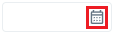
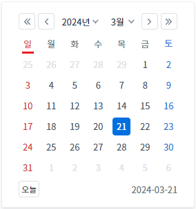
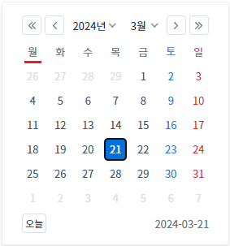
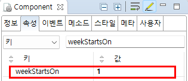

InputCalendar의 'weekStartsOn' 속성을 사용하여 달력의 시작 요일을 설정한 예제입니다.
설정 값에 따른 시작 요일은 다음과 같습니다.
0: [default] 일
1: 월
2: 화
3: 수
4: 목
5: 금
6: 토
달력의 시작 요일을 '일요일'로 설정하기
달력의 시작 요일을 '월요일'로 설정하기
1
STEP 1: 달력 아이콘을 클릭합니다.
예제 영역 "(기본 설정) 달력의 시작 요일을 '일요일'로 설정하기"에 구성된 InputCalendar의 달력 아이콘을 클릭합니다.Image 1.브라우저(Chrome) 실행 예시 - 달력 아이콘

2
STEP 2: 실행된 결과를 확인합니다.
달력의 시작 요일이 '일'(SUN)부터 시작됩니다.
Image 2.브라우저(Chrome) 실행 예시

1
STEP 1: 달력 아이콘을 클릭합니다.
예제 영역 "달력의 시작 요일을 '월요일'로 설정하기"에 구성된 InputCalendar의 달력 아이콘을 클릭합니다.Image 3.브라우저(Chrome) 실행 예시 - 달력 아이콘
2
STEP 2: 실행된 결과를 확인합니다.
달력의 시작 요일이 '월'(MON)부터 시작됩니다.
Image 4.브라우저(Chrome) 실행 예시

1
InputCalendar의 속성을 정의합니다.
[필수] weekStartsOn="1"
(옵션 설명)
- 0: [default] 일
- 1: 월
- 2: 화
- 3: 수
- 4: 목
- 5: 금
- 6: 토
Image 5.웹스퀘어 스튜디오의 Component View - 속성 설정 예시

Example 1.Source
<!-- inputCalendar 의 소스 본문 예시 --> <w2:inputCalendar weekStartsOn="1"> </w2:inputCalendar>
weekStartsOn